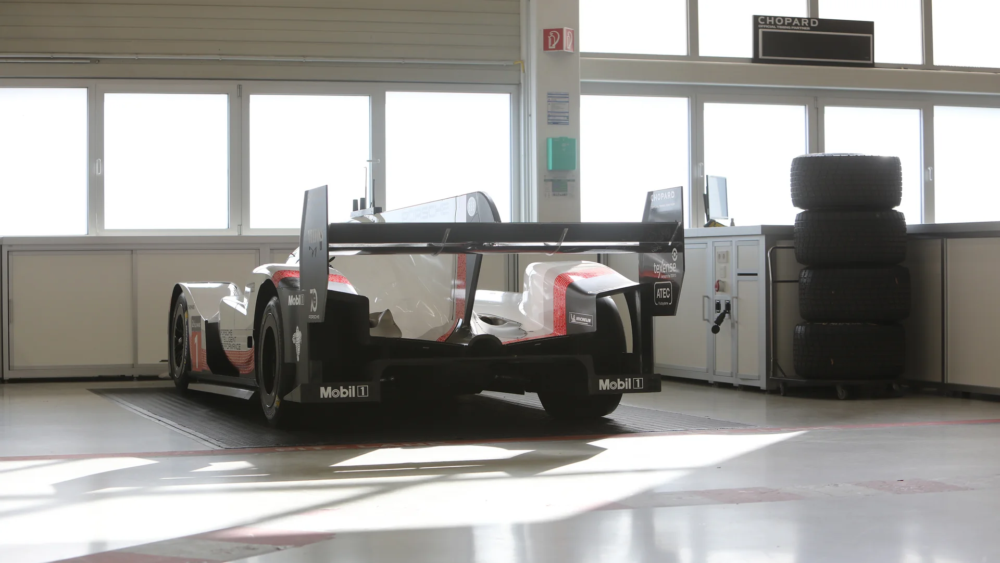
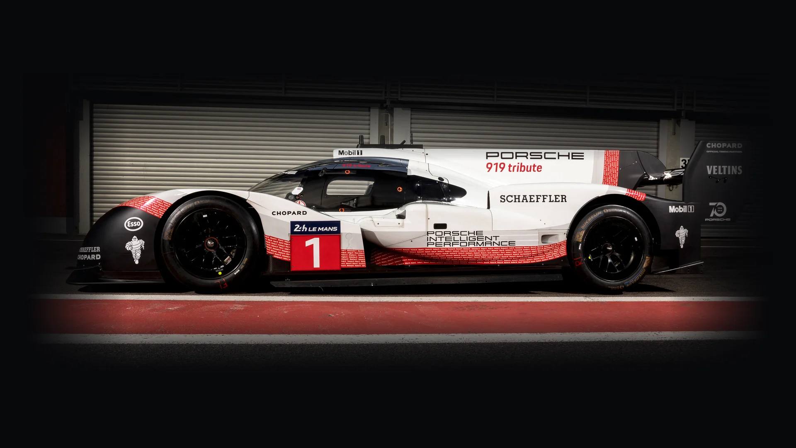

WEC 规限时代
受每圈燃油流量表、能量上限约束，9R9 2.0L V4 输出压在 500 PS 以内，系统总功率锁定约 900 PS。

撤掉 WEC 规则束缚，2.0L V4 涡轮混动释放 1,160 PS。 走下勒芒三连冠王座，在斯帕、纽博格林定格原型车速度上限。
2015 至 2017 年，919 Hybrid 连夺三届勒芒 24 小时总冠军与 WEC 双冠。告别顶级组别之际，魏斯阿赫撤去燃油流速、能量配额与空力限制，检验其真实物理极限。
受每圈燃油流量表、能量上限约束，9R9 2.0L V4 输出压在 500 PS 以内，系统总功率锁定约 900 PS。
四年 34 战，拿下 17 胜、20 杆位、43 次领奖台，连续三年包揽勒芒全场与 WEC 厂商、车手双冠。
沿用 WEC 冠军底盘与核心动力硬件，仅凭程序解锁、气动重塑，输出跃升 1,160 PS，整车减重 39 kg。
“我们不愿这台极具创新性的赛车功成后直接封存博物馆，919 致敬之旅正是献给这段岁月的告别。”
FRITZ ENZINGER · 保时捷 LMP1 项目副总裁


9R9 2.0L 90° V4 保留全部 WEC 硬件，放开 E20 燃油流速即输出 720 PS。前轴制动回收配合排气涡轮发电，构成 800 V 高压能量闭环。
“这一次，制约我们的不再是规则，而是资源。经过改进和调校，它打破了 F1 赛道纪录，对工程师而言，这是梦想成真的时刻。”
STEPHEN MITAS · 保时捷 LMP1 项目总工程师


车宽、车高维持 1,900 × 1,050 mm，加大型前扩散器将车长延至 5,078 mm。移除大灯梳理前缘流场，并首次搭载前后双端液压 DRS。
在 2017 WEC 规则、2018 EVO 无限制状态间即时切换，实时检验前后液压 DRS、440 PS 前桥电驱与线控制动回充。

WEC 限速 335 km/h 且禁用 DRS · EVO ≥ 140 km/h 开启双端 DRS · KERS 回充即断油

2018.04.09 10:23，气温 11 °C、路面 13 °C。Neel Jani 均速 245.61 km/h 跑完 7.004 km，快过 2017 F1 杆位 0.783 s。
缸体、变速箱、电池硬件全部沿用。仅放开燃油流速、加装双端 DRS，单圈便甩开 2017 WEC 杆位 12 秒，领先 Lewis Hamilton 的 F1 杆位 0.783 秒。
“919 Evo 绝对是我开过最快的车。驾驶它跑单圈时一切迅如闪电，抓地力超乎了我过往对赛车的全部认知。”
NEEL JANI · 2016 勒芒总冠军 / 斯帕 1:41.770 纪录车手

2018 年 6 月 29 日清晨，Timo Bernhard 驾驶 919 Evo 跑完 20.832 km 纽北，均速 233.8 km/h，极速 369.4 km/h。
620 PS · 平均时速 > 200 km/h · 1000 公里耐力赛排位
1,160 PS · 均速 233.8 km/h · 极速 369.4 km/h
“在我心目中，Bellof 一直都是个巨人。感谢 919 Hybrid Evo 的空气动力学和下压力，今天我用全新的方式重新认识了纽北。”
TIMO BERNHARD · 两次勒芒总冠军 / 纽北 5:19.55 纪录车手
自勒芒三连冠启程，途经比利时、德国、英国、加州。
919 项目共造 9 副碳纤维单体壳底盘，仅 1 台改制为无规限 919 Hybrid Evo。
三届勒芒冠军之外，919 Hybrid Evo 以一具 2.0L 四缸混动，留下斯帕 1:41.770、纽北 5:19.55 两项计时坐标。